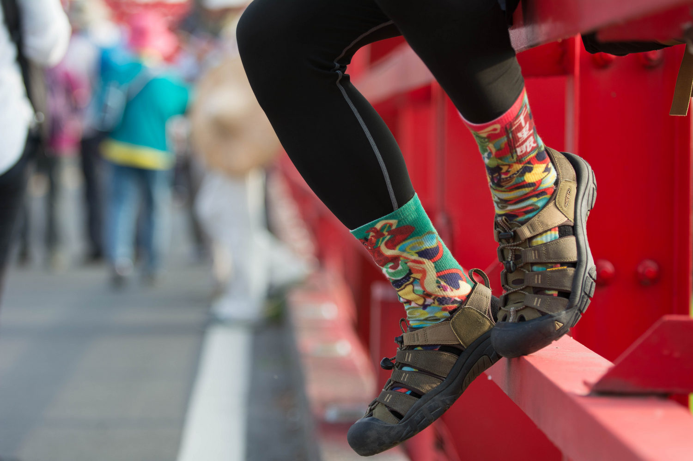
▲ 當年一起隨媽祖進香繞境的好夥伴 KEEN Newport
在過往的經驗中，Newport 無論是徒步或是平時穿著都非常適合，不過僅只如此，總覺得未能發揮到 KEEN 涼鞋最重要的特點，也就是「水陸兩棲」的能力。後來在這一年的時間裡，我穿著那雙 Newport 去過許多地方，其中不乏需要涉水健行的場合，才逐漸明白一雙水陸涼鞋在戶外扮演多麼重要的角色。
這次受到 KEEN 的邀約體驗同一系列的 Newport H2，又激起我仔細研究 KEEN 涼鞋的興致，在這篇文章裡，我將聚焦在穿著 Newport H2 前往需要涉水的單日健行，並且實地走訪大屯溪古道來考察它的性能。究竟 KEEN 有什麼秘密，能夠成為水陸涼鞋最具代表性的品牌呢？就讓我們來一趟大屯溪古道，且走且看吧！
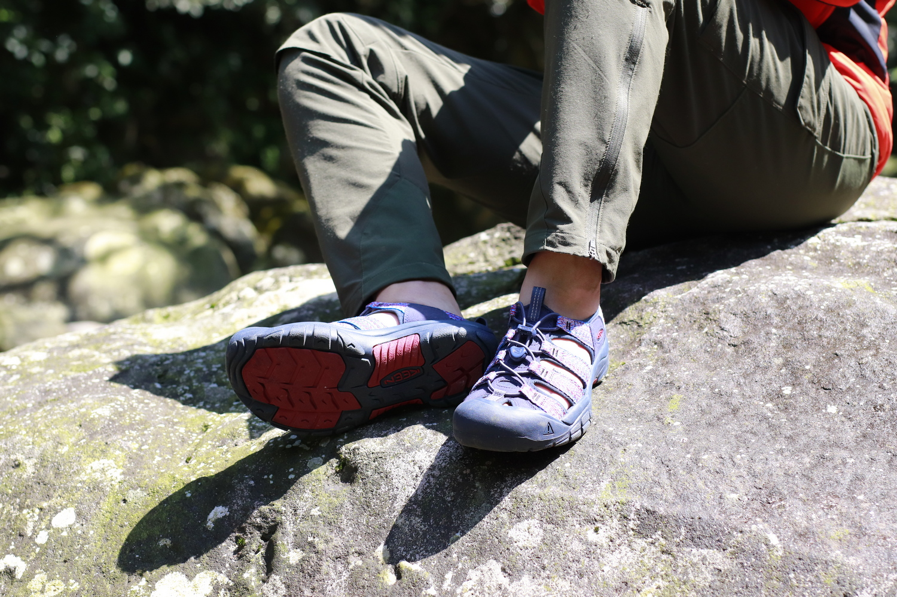
▲ 讓我們穿上 Newport H2 走一趟大屯溪古道吧！
【Newport H2 成為王者的秘密】
聚酯織帶鞋面：一見鍾情的狂野優雅
一雙好鞋，從映入眼簾的那刻起就要打動人心。就像看見一座古色古香的百年三板橋矗立在古道口的村落中，歷史的印象也會更加鮮明。在進入大屯溪古道之前，我和 Sean 在聚落中的百年三板橋上調整裝備（雖然事後才發現三板橋根本就不在古道口），同時再度檢查涼鞋的狀態。
Newport H2 擁有多樣化的色彩搭配，包括純黑、土棕、海藍、軍綠、亮橘、酒紅、鐵灰等素色系列，以及迷彩、熱帶花卉、傳統圖騰等圖案系列，不僅可依照個人喜好挑選屬意的顏色配置，走在戶外時也不易與其他人撞色。這次我選擇紅藍白交織的配色，為雙腳增添了些許民俗風味，它的精緻與繽紛無疑取悅每一位穿上它的人，更妝點了所有踏入山水的野性靈魂。
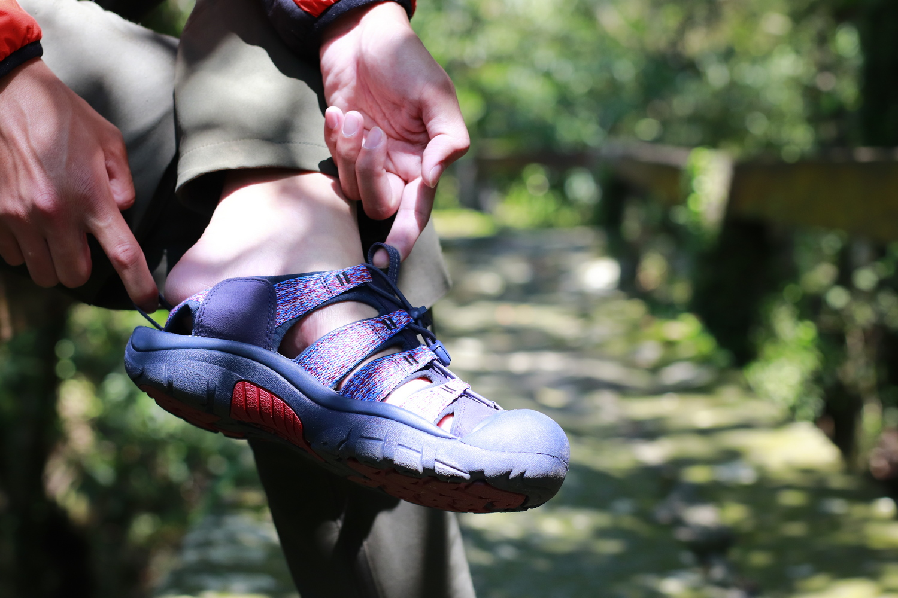
▲ 紅藍白交織的 Newport H2 精緻又繽紛，鞋舌與鞋跟拉環更方便穿著
融合野性與山系美感一直都是 KEEN 的強項，我曾經在一篇文章中介紹過 KEEN 的 Targhee III 中筒登山鞋，那雙鞋以 Nubuck 頂級牛皮革製成的鞋面、暗灰色透氣網眼布與酒紅色織帶和鞋帶，完美地演繹什麼叫做「狂野的優雅」。或許，作為涼鞋的 Newport H2 還未能稱得上狂野，然而不論對於戶外好手還是有意走進大自然的民眾而言，它始終是一雙極富山野旨趣的涼鞋。
有句話是這麼說的：「一見鍾情、再見傾心。」在迷人的外表下，Newport H2 的鞋面選材與製程其實大有文章，它是聚酯纖維所編成的織帶，兼具了輕巧、柔軟與耐用的特性，並且利用不含全氟烷化合物（Perfluorinated Compounds，PFCs）的塗料來達到防水的效果，不但顧及功能性，同時也保護環境不受化學物質所汙染。
誠然，KEEN 所重視的不只是外表，作為戶外運動用品的領導品牌，KEEN 不斷地精進自家的產品，持續推陳出新，同時也善盡社會責任，淘汰對環境有害的材料和製程（包括鞋床與防水 KEEN.DRY 等材質使用上），這些都是它深受大眾喜愛的原因。
彈性繩鞋帶與腳趾帽：安全第一不容馬虎
既然號稱水陸兩棲，鞋子的安全性是絕不容馬虎的環節，而 Newport H2 在設計上兼顧了安全考量。
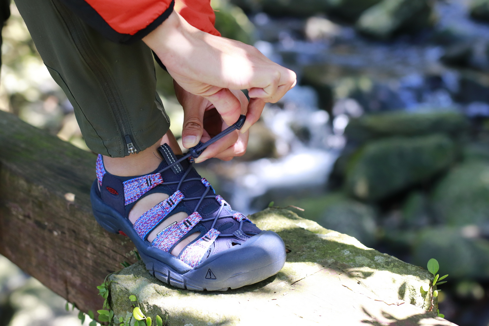
▲ Newport H2 配備彈性繩鞋帶與滑扣，既便利又安全
首先，Newport H2 將鞋面設計成花邊形狀，這樣的設計除了美觀，還能夠適應不同腳型，不論是寬腳還是窄腳都能夠妥善包覆。鞋帶則使用方便操作的彈性繩與安全滑扣，並且穿過鞋面每一條織帶，可以快速地將鞋子牢牢鎖定在腳上。
同時，Newport H2 鞋面織帶下方的內襯是由類潛水防寒衣材質製成，除了大大提升接觸的舒適度外，更重要的是讓腳背與鞋能夠更貼合，也增加了行走的安全性，特別是當涉溪之時，鞋子浸在溪水當中，內襯會「黏」在腳上，抑止行走時滑動的現象。
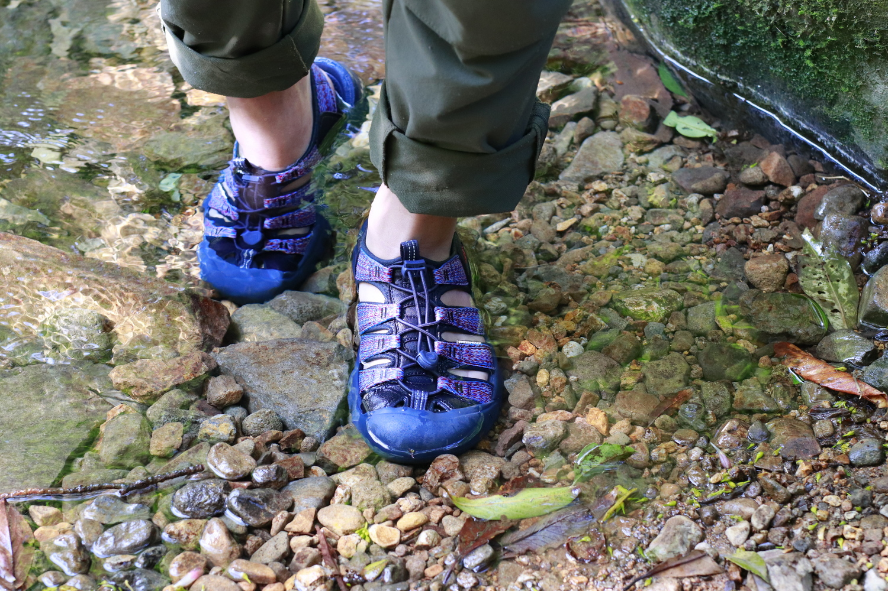
▲ Newport H2 護趾鞋頭保護腳趾也提升安全舒適感
在碰撞防護方面，Newport H2 配置 KEEN 登山鞋必備的 KEEN.PROTECT 護趾鞋頭，這是由 KEEN 首創的設計，能夠最直接地保護腳趾頭，避免在踢到硬物時受傷。而護趾鞋頭內部擁有寬敞的空間，讓腳趾頭在裡頭能夠活動自如，不會在行進間受到擠壓而感到不適，甚至當腳趾頭之間擁有較多空間時，變得不容易摩擦，舒爽又避免起水泡。
大屯溪古道沿著大桶湖溪而行，由於位處溪谷上游，路徑中的石塊較多，地形起伏也比較頻繁，經常穿梭在石堆之間，時而攀爬、時而涉溪，這也使得腳不小心去踢到石頭或雜物的風險增高，幸而 Newport H2 搭載護趾鞋頭，讓人能夠更安心地悠遊其中。
無痕橡膠大底：抓住地也抓住你的心
在溪谷裡行走，還有另一個威脅就是「濕滑」，大屯溪古道因位於終年潮濕的溪谷，縱然到了相對乾燥的夏秋兩季，由於樹林茂密的關係，陽光與風也難以進入溪谷底部帶走水氣，長久下來，石頭上便附著一層濕滑的泥土。樹林底部的腐植質也是造成路徑濕滑的原因之一，此外，由於大屯溪古道多處須涉水而行，溪床的石塊經常長滿石苔，再加上水流沖刷，若無防滑的鞋幾乎難以立足。
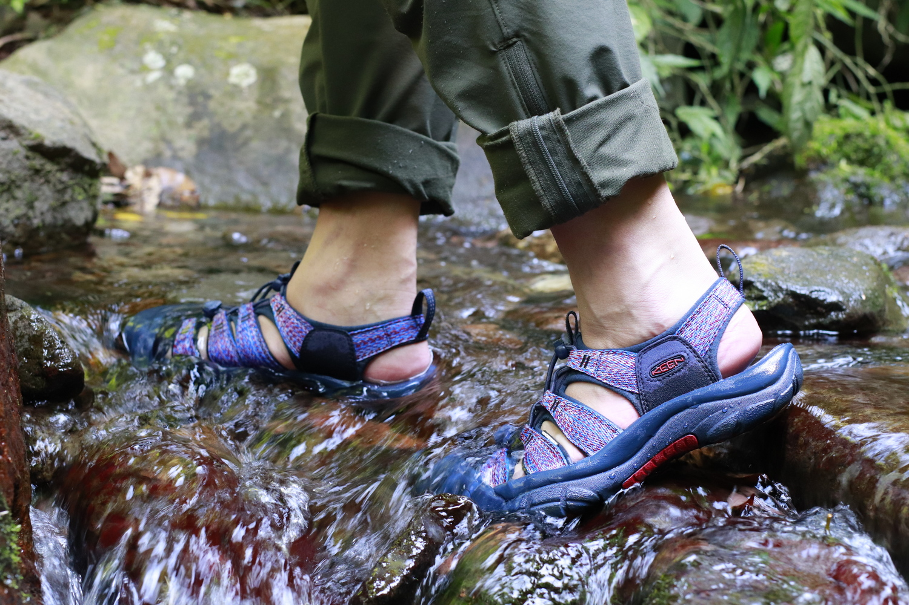
▲ 穿著 Newport H2 過溪相當安全可靠
為了因應溼滑地形，Newport H2 搭載具有低矮且厚實鞋紋的無痕橡膠大底，這些鞋紋的排列具有多向性，能夠咬入不平坦的表面，並有效提升鞋底的抓地力。在側邊的部分，則是進一步配置額外的凸耳以增加橫向的阻力，避免最容易造成腳踝扭傷的側向打滑。整體而言，Newport H2 的大底能夠提供不錯的防滑力，即使像大屯溪古道這樣的溪谷地形也能夠輕鬆克服。
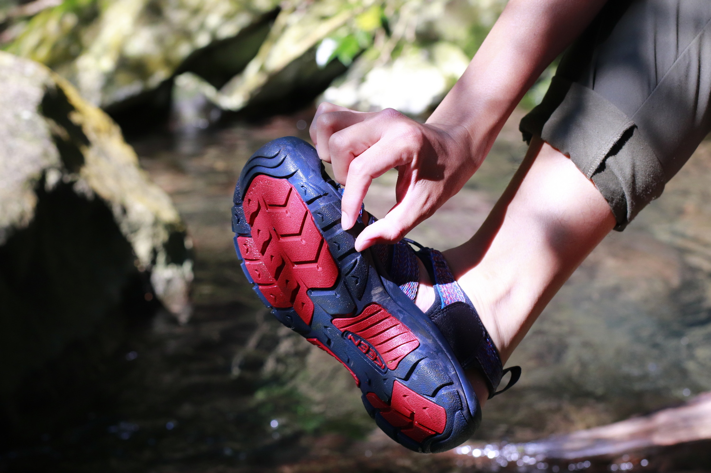
▲ Newport H2 多向鞋紋大底，側邊配置額外凸耳避免橫向打滑
Newport H2 的鞋底還有一個秘密武器，就是位於前腳掌部位的精密剃刀紋路，這個平時隱藏的紋路會在鞋底彎曲時顯露出來。也就是說，當行進間或是因為地形的緣故使得我們必須使用前腳掌著地，因而鞋底接觸面積較小導致抓地力降低時，剃刀鞋紋可以提供額外的摩擦力，提升行進間的安全性。
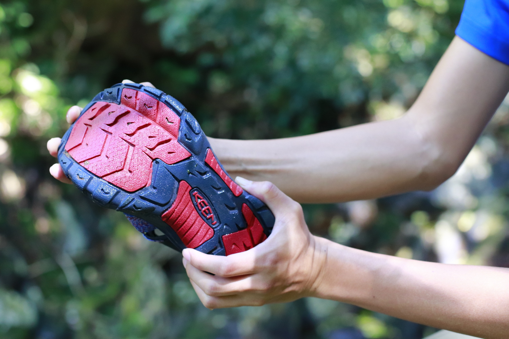
▲ Newport H2 前腳掌部位擁有精密剃刀紋路，行進間更穩定
KEEN 運用各種設計與巧思，來增強涼鞋大底的機能，特別是在保護性與抓地力兩項表現出色，讓人穿著它行經溪谷地形時，安全都能夠獲得更多保障。（不過還是要提醒大家，台灣山谷地形多變，加上每個人對於地形的熟悉度及行動能力都不一樣，所以在石階與溼滑的路段仍然要注意自己的步伐。）
高密度 EVA 中底：溫柔的呵護堅定的支持
安全性優異的 Newport H2，在舒適感方面也絲毫不馬虎，它使用改良式的高密度 EVA（乙烯／乙酸乙烯酯共聚物，Ethylene Vinyl Acetate）中底，不但具備傳統 EVA 材質獨特的柔軟與彈性，在耐用度上也比傳統 EVA 中底顯著提升。穿著 Newport H2 走在崎嶇不平的大屯溪古道，甚至是大小石塊遍布的溪床，都像踏在平坦的地面上一樣。
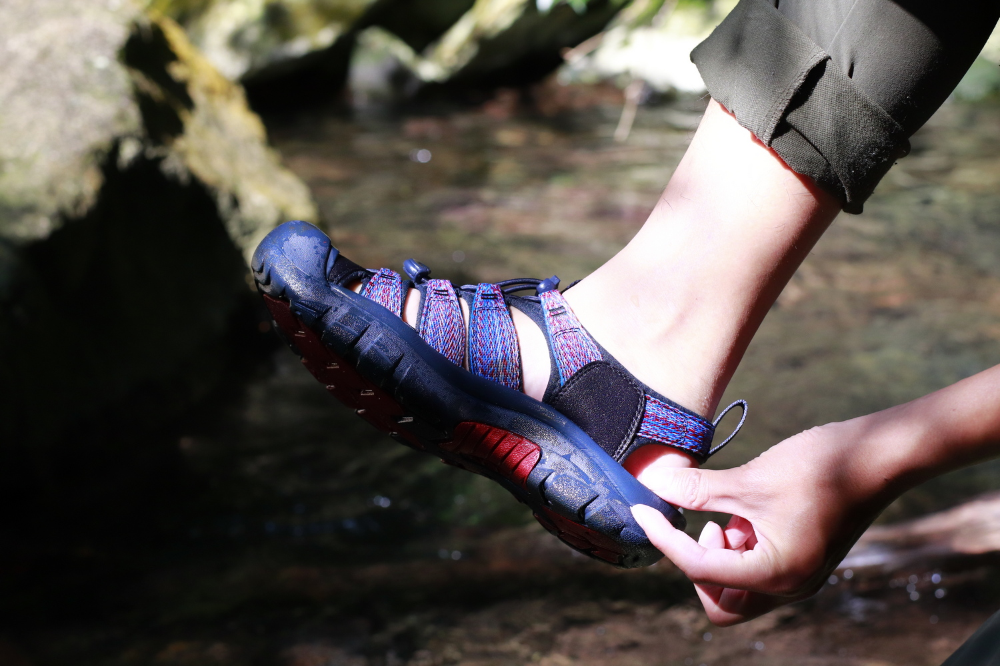
▲ Newport H2 使用高密度 EVA 中底，防震效能再提升
高密度 EVA 中底提供良好的避震與支撐，造就了 Newport H2 比起一般涼鞋更適合長途步行的特性，腳底板比較不易因久走而疼痛。
雖然穿著 Newport H2 以來，最遠的單次行走距離才不過 5 公里，不過根據去年穿 Newport（配備相同的高密度 EVA 中底）參與媽祖遶境的經驗，一次走 20 公里都是沒有問題的。那麼穿上 Newport H2 到底可以走多遠不會腳痛呢？根據那次遶境的經驗，我的答案是大約 30 公里左右，這個距離已然超越大部分登山行程一日行走的量了，顯見高密度 EVA 中底與 TPU 足弓支撐片是在健行中保持舒適的關鍵。
而整雙涼鞋最親近腳底板的部分，Newport H2 具有 Metatomical 鞋床，「Metatomical」這個詞源自於 metatarsals（蹠骨）和 anatomical（解剖的），顧名思義，就是符合人類足部生理結構，使得腳掌能夠與鞋床更加服貼，以確保舒適和安全。Metatomical 鞋床經過設計，增強 EVA 中底對於前腳掌與後腳跟避震的功能，同時足弓的部分也能再獲得額外的支撐，再搭配特殊紋理表面，即便踩在水中，腳底板與鞋床間也比較不會發生打滑的狀況。
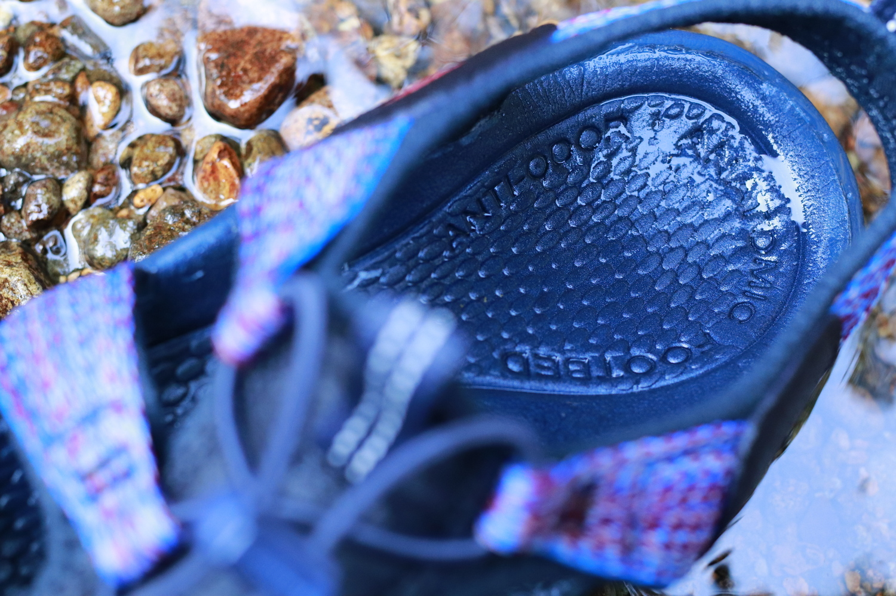
▲ Metatomical 鞋床能夠有效減少腳掌滑動
【優勢與美中不足】
這次我們只走到三號防迷樁，也就是小觀音山北峰岔路，從這邊回到古道口需要下降海拔 300 公尺，伴隨沿途濕滑且崎嶇的路徑，在在考驗 Newport H2 各種性能的發揮。而 Newport H2 並沒有讓人失望，我穿 Newport H2 行走的順暢度和穩定度絲毫不輸給穿中筒登山鞋的 Sean，甚至在過溪的時候，因為可以直接涉水走河床，還顯得更加便利且安全。
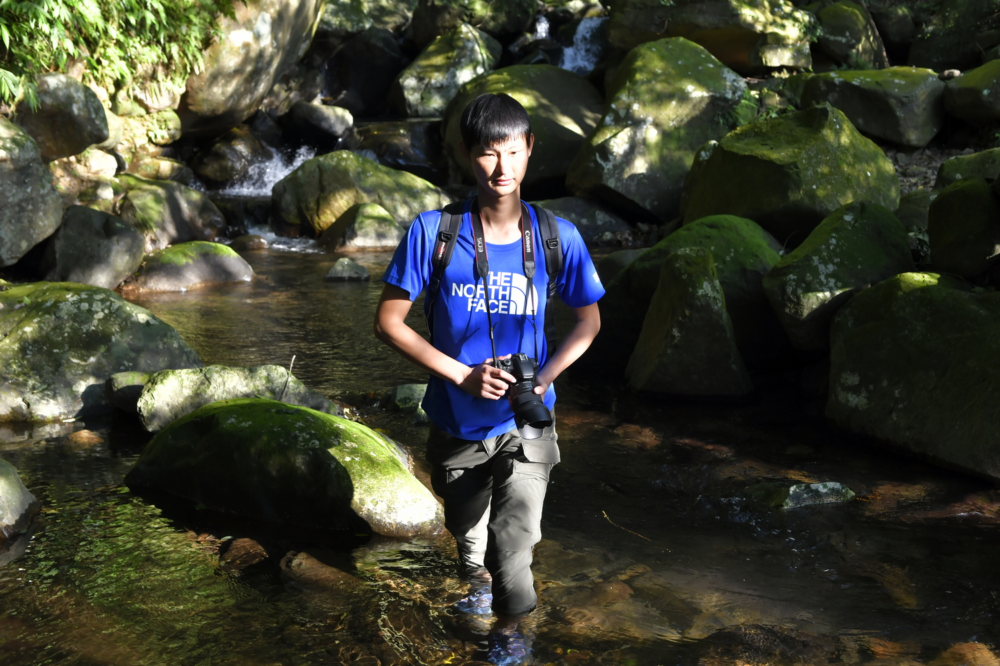
▲ 穿著 Newport H2 可以安心涉水渡溪
在健行與親水活動中，Newport H2 擁有以下優勢：
● 擁有強悍的抓地力
● 避震性能優異
● 能夠充分支撐足弓
● 腳底與腳背服貼防止打滑
● 無死角完美保護腳趾頭
而它也有兩點美中不足的地方：
● 碎石雜物進入不易排除
● 因 EVA 中底厚實所以重量較重
關於雜物跑進鞋子的部分，我自己的經驗是可以選擇較為合腳的尺寸，當鞋的各部位都與腳更緊密貼合的時候，雜物便不容易進入鞋中。或是如果在不會接觸水的行程中，也可以穿襪子當作緩衝，以避免雜物造成不適的感覺。
有部分使用者回報踝帶容易磨損，不過我自己穿著一年多的 Newport 目前並沒有發生這樣的情況。此外，兼具這麼多優點於一身的 Newport H2 比較無法顧及輕量化，雖然 Newport H2 因為將 Newport 的皮革鞋面改為聚脂纖維而重量稍有減輕，單一隻重量還是高達 380 公克，而這已經幾乎是一隻普通布鞋的重量了。
至於改成聚脂纖維除了減輕一點重量之外，還有什麼好處呢？答案是聚脂纖維比較不怕水，也比較快乾，因此對於水陸活動而言，Newport H2 比起 Newport 更加方便也更好保養。
最後還是要提醒各位讀者，縱然 Newport H2 擁有良好的兩棲性能，但它畢竟不是溯溪鞋，行走在長期受到水流沖刷的河床上還是有其危險性，特別是河床上經常有水生植物附著，並不是任何橡膠鞋底能夠克服的。在健行之餘，需要短暫涉水渡溪的行程才是 Newport H2 適當的穿著時機，技術性的溯溪還是務必穿著溯溪鞋。
讓我們一起穿上 Newport H2 出門探險吧！
▲ 一起穿上 Newport H2 出門探險吧！
【大屯溪古道小檔案】
大屯溪古道位於小觀音山東側、大屯溪上游支流大桶湖溪的溪谷，最早是由林宗聖先生所命名。由於古道的沿途長滿大菁，且後來李瑞宗先生在實地踏查時，發現煉製藍靛的菁礐與石厝遺跡，確認此處是清代先民採集大菁的古道，因此在調查報告中稱為「藍路古道」。
「大屯溪古道的起點在三板橋。」這句話不曉得已經誤導多少人，我和同行夥伴 Sean 在三板橋附近遍尋路徑未果，拿出手機一查之下才發現原來入口位於竿尾崙山腳的石厝遺址旁。不過大老遠來到此處，造訪這建於清同治十年（有一說為十七年）的三板橋，了解此地拓墾的歷史也是相當值得的。（此處不加詳述，請參閱 Tony 前輩的紀錄。）
從竿尾崙山腳的石厝遺址到小觀音山北峰岔路的三號防迷木樁單程距離約 1.75 公里，來回只需兩、三個小時，是一條相當親民的路線。古道穿梭在鬱鬱蔥蔥森林溪畔，潺潺的水聲不絕於耳，其中幾處需要涉水渡溪，可以近距離感受溪水的清澈與冰涼。
本文同步發表於健行筆記： ● 【鞋測】水陸兩棲的王者涼鞋 KEEN Newport H2 更多故事請關注宇宙浪人工作室。 部分照片由 Alan 與 Sean 協助拍攝。 本計劃與 KEEN Taiwan 合作推出。